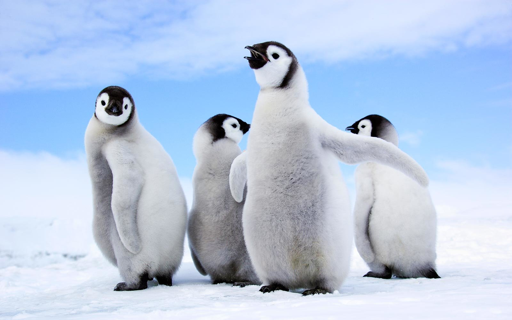

ABOUT PENGUINS..
penguin are flightless seabirds that live almost exclusively below the equator . some island-dwellers can be found in warmer climates penguins-reside in and around icy antartica.
penguins are group of fightless birds. they live almost exclusively in the southern hemisphere,with only one species, highly adapted for a life in the water , penguins have counter
shaded darkand white plumage and flippers swimming.
eaten by : SEA LIONS
SCIENTIFIC NAME : spheniscidae
FAMILY : spheniscidae,bonaparte,1831
copright©2020 penguin™